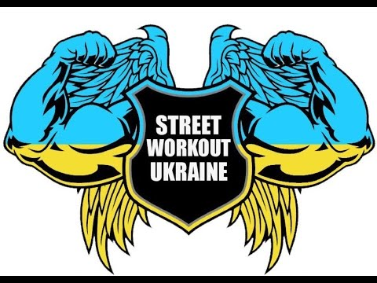

Street Workout в Україні
В Україні доволі давно існують спортивні майданчики на яких займались школярі, молодь і небайдужі до фізичного здоров’я люди. Вправи, які виконувалися на турніках переважно включали елементи шкільної програми (підтягування, вихід силою, підйом з переворотом, віджимання на брусах, тощо) та вільні видумані елементи. З поширенням інтернету в 2000-х рр. з’явилася можливість ділитися досвідом, демонструвати власні досягнення та знаходити однодумців у різних куточках країни та світу, що вилилося у появі одиночних та командних змагань по Street workout. В Україні одним з перших ідеологів Street workout був Денис Мінін. Денис є лідером Всеукраїнської громадської організації "Стріт Воркаут Україна". Денис Мінін почав набирати популярність восени 2009 року після того, як відео з його системою тренувань під назвою "Турник + брусья, сильный парень из Днепропетровска" було розміщено онлайн. Відео налічує понад 10 млн переглядів.

Чемпіонат World Street Workout Championship
2011
Перший Світовий чемпіонат з World Street Workout Chamionship пройшов у Ризі, Латвія 27-28 серпня, 2011 року. Переможцями стали:1-ше місце: Євген Козир (Харків, Україна
2012
Другий Світовий чемпіонат з World Street Workout Chamionship пройшов у Ризі, Латвія 2-5 серпня, 2012 року. Переможцями стали: 1-ше місце: Євген Кочерга (Одеса, Україна), 2-ге місце: Євген Козир (Харків, Україна), 3-тє місце: Микола Лобанов (Росія)